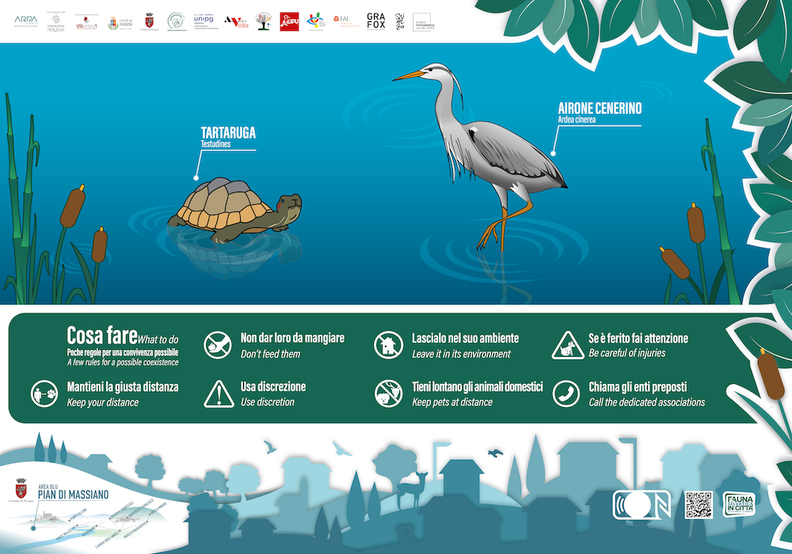
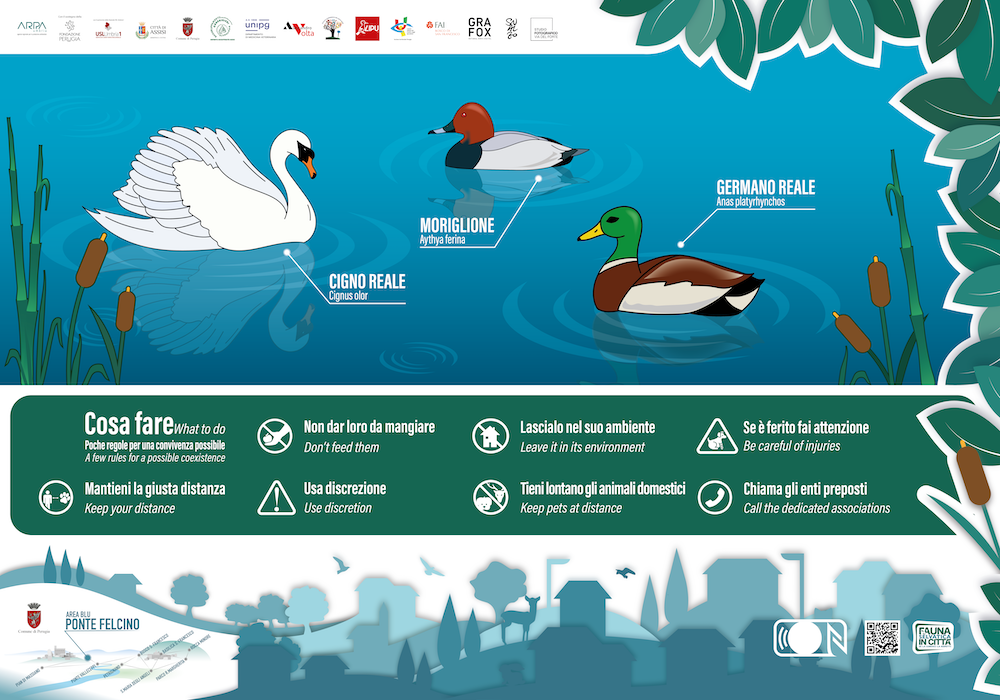
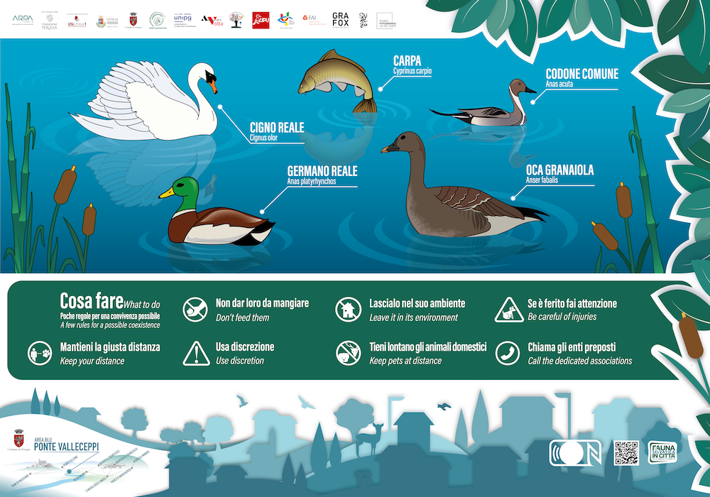
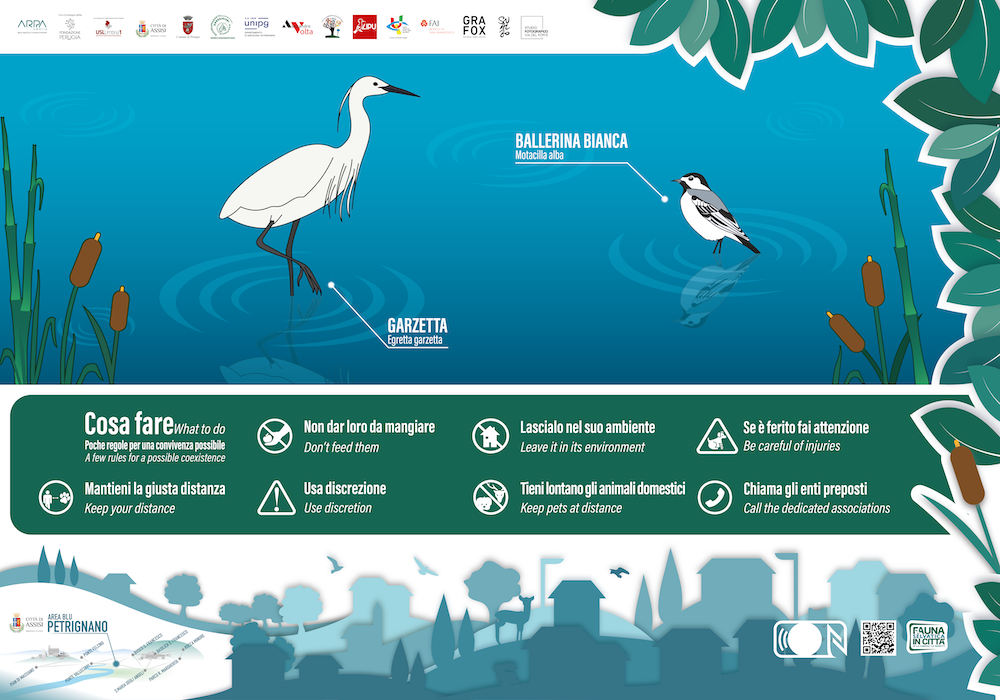

Le aree blu si riferiscono principalmente agli ambienti acquatici quali i laghetti, le fontane, gli stagni e i tratti fluviali. Anche queste aree svolgono un ruolo fondamentale nella salvaguardia del benessere fisico e mentale dei cittadini. Nell’ambito del progetto il Comune di Assisi e il Comune di Perugia hanno individuato specifiche zone di interesse, particolarmente frequentate dai cittadini, in cui il rapporto con gli animali selvatici diventa significativo ed è quindi rilevante individuare attraverso la formazione e l’educazione, le giuste buone pratiche.
Comune di Perugia:
Il laghetto, riqualificato nel 2020, accoglie oltre agli anatidi di più specie, all’avifauna locale e a una piccola colonia di nutrie, anche pesci (carpe) e tartarughe. È alimentato da un immissario che raccoglie le acque piovane e da un sistema di integrazione che attinge a un pozzo limitrofo per sopperire alle carenze idriche estive. Il Comune da diversi anni ha attivato una convenzione con la LAV (lega anti vivisezione sezione Perugia) per la somministrazione del cibo agli animali presenti (negli orari mattutini e pomeridiani). Un veterinario, individuato dal Comune di Perugia, provvede alla determinazione della dieta alimentare, al censimento dell’avifauna acquatica, al controllo delle nascite ed al monitoraggio dello stato sanitario degli animali.
E’ un’area naturalistico-ambientale di circa 4 ettari di proprietà comunale. La sua nascita, avvenuta nella seconda metà degli anni 90, si deve alla volontà del territorio di scopo di promuovere concetti naturalistici ed ecologici in generale e in particolare legati a piante e foreste e la conoscenza e la valorizzazione dell’ambiente vegetale. Sono presenti oltre 1.000 specie botaniche arboree, arbustive ed erbacee, una serra dedicata alle piante succulente (piante grasse), una agli agrumi, una grande serra a cupola con piante tropicali e un'altra con piante degli ambienti subtropicali, un roseto, un bosco planiziale e un bosco ripariale. Il Bosco Didattico quindi può essere letto da molteplici punti di vista: studio sulle caratteristiche delle piante, studio sulle utilità delle piante nelle varie attività umane (alimentazione e industria) e sulla loro funzione insostituibile nella vita del pianeta e nel ciclo della vita, studio delle tecniche colturali, studio di ogni essenza vegetale nelle sue caratteristiche ornamentali e decorative da impiegare nei giardini, nel verde attrezzato, nelle opere pubbliche e di come la vegetazione possa inserirsi nel contesto urbano, nei boschi, ecc. Legato intimamente al Bosco Didattico è il canale di adduzione di acqua da Villa Pitignano alla ex-Centrale idroelettrica di Ponte Felcino. Le sponde sono state opportunamente riambientate con vegetazione ripariale e il ripopolamento del canale è stato completato dall’immissione di pesci e di animali acquatici che oggi animano il suo corso. Il Bosco didattico sarà oggetto di intervento in numerosi settori di esso a valere sui fondi PNRR, tra cui la realizzazione di una nuova serra subtropicale riprendendo la struttura di protezione utilizzata per il restauro della Fontana Maggiore di Piazza 4 Novembre; il rifacimento totale della serra subtropicale esistente e la realizzazione di una nuova area dedicata agli animali garantendo la convivenza e le necessità di ognuno di essi.
Geograficamente situato a est del territorio di Perugia, a 200 m s.l.m., Ponte Valleceppi (Ponfalceppo) è una frazione di Perugia di circa 3.000 abitanti. Il territorio è pianeggiante e in minima parte collinare. Il simbolo della città è il ponte, passaggio esistente già in origine romana, che la collega a Perugia e che attraversa il fiume Tevere lungo il quale si sono sviluppati numerosi mulini. Lungo il Tevere è posto il parco comunale realizzato con il contributo di associazioni di volontari e degli Enti territoriali. In passato il Parco è stato oggetto di adeguamenti strutturali e ad oggi Il Parco di Ponte Valleceppi e il Bosco Didattico di Ponte Felcino sono inseriti in progetti a valere sui fondi del PNRR per circa 10 milioni di € sul Percorso ciclo-pedonale del Tevere. L’area è stata prescelta come interessante per il progetto sulla fauna in quanto limitrofa al corso del Fiume Tevere ed inoltre perché sarà resa accessibile a tutti grazie ai miglioramenti mirati ad eliminare le barriere architettoniche. In particolare è previsto il rifacimento della sentieristica interna che sarà resa facilmente percorribile anche da persone con difficoltà motorie e l’integrazione dei giochi per bambini presenti con attrezzature inclusive.
Comune di Assisi:
Il percorso naturalistico lungo le rive del fiume Chiascio si sviluppa dalla frazione di Torchiagina, passa sotto l’antico borgo di Sterpeto e arriva al centro del paese di Petrignano. È un lembo naturale ben conservato e di notevole valore paesaggistico e naturalistico. Nelle acque del fiume sono sicuramente presenti ciprinidi quali barbi, carpe e tinche, oltre all’avifauna. Lungo le sponde e nelle zone di scoglio affioranti o ancora, sulle piccole spiagge di ciottoli e sabbia presenti nelle anse fluviali, si riconoscono alcuni uccelli sedentari, altri migratori: l’airone cinerino, germani reali, alzavole, limicoli e martin pescatore.
